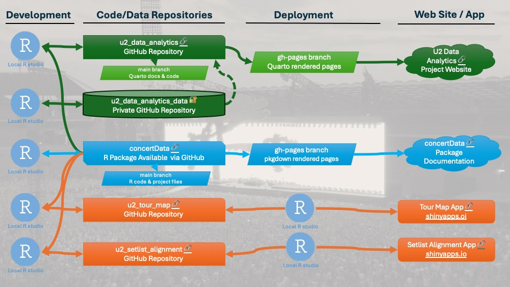

Sharing
Introduction
This project evolved over time, and more structure and organization of code, data and reports was needed. With some tips from Claude.AI I eventually arrived to the following set up, using a combination of public and private GitHub repositories for code, R-package, Quarto website and data management and version control, the R Studio local environment connected to GitHub and the shinyapps.io hosting platform for the interactive visualization apps. This diagram gives the overall set-up:

GitHub Code Sharing
All the code that I wrote, and in some cases co-wrote with Claude.AI and/or Perplexity.AI, is available in my GitHub repositories, in the following ways.
concertData R-package
https://github.com/vanleeuwen-hans/concertData
This is my concertData R-package where I organized the functions I wrote to perform all the data processing, analytics and visualization as part of my Capstone Project for the Google Data analytics Certification.
concertData Documentation
https://vanleeuwen-hans.github.io/concertData/index.html
With pkgdown I was able to easily create documentation web pages for my concertData R-package.
# install and load library
install.packages("pkgdown")
library(pkgdown)
# In the package directory, run:
usethis::use_pkgdown()
# This will create a _pkgdown.yml configuration file and add necessary entries to .gitignore
# To build the site locally in R-Studio, use:
pkgdown::build_site()
# This will create a docs/ directory with your website files
# Automate deployment with GitHub Pages
usethis::use_pkgdown_github_pages()
# This sets up GitHub Actions to automatically build and deploy your site whenever you push changes to your repositoryThe resulting website includes:
A homepage based on your README.md
Reference pages for all exported functions
The changes can then be committed and pushed to GitHub from R-Studio.
Code Chunks in the Quarto Report
I used Quarto to publish my Capstone Project report for the Google Data analytics Certification, containing my methods, analysis code chunks, results including plots, insights and lessons learned. More about the set-up in the next paragraph. Some example R Code chunks with my analysis code and outputs can be seen at my U2 Data Analytics Quarto web site.
Quarto Report on GitHub Pages
Introduction
To write my report for the Google Data Analytics Certification Capstone Project I first experimented with basic R Markdown pages, but then switched to Quarto which was easy having a report with multiple pages, and it is convenient to share and publish it on GitHub Pages. Basically, the Quarto Report that you are reading now was created as I advanced in my project, and includes all the analysis steps. The report pages are automatically rendered at which point the analysis code is executed and the resulting output, tables or plots are included in the report page. The structure of the report is created in the _quarto.yml file in the R Studio project folder, and then the individual Quarto documents with the sections of the report are automatically linked into one web site.
Setting up the Quarto website
The initial push of my rendered Quarto documents to my GitHub repository and GitHub Pages was a challenge as there were many files, including images, and the total size made the process fail. Here is how I set it up:
In my GitHub account I created a new repository: u2_data_analytics, with nothing in it. In the Settings > Pages section I selected to deploy from the gh-pages branch (see below) and from the docs folder. That is the Folder where Quarto renders and creates the website files.
Locally, in the folder of my R Studio project u2_data_analytics, I worked on the MacOS terminal:
# initialise git repository locally
% git init
Initialized empty Git repository in u2_data_analytics/.git/
# link it to the online GitHuB repository
% git remote add origin https://github.com/vanleeuwen-hans/u2_data_analytics.git
# pull from remote main branch
% git pull origin main
From https://github.com/vanleeuwen-hans/u2_data_analytics
* branch main -> FETCH_HEAD
# create gh-pages branch that will be used for publishing Quarto Report pages only
% git checkout -b gh-pages
Switched to a new branch 'gh-pages'
# Push the new branch to remote
% git push origin gh-pages
Total 0 (delta 0), reused 0 (delta 0), pack-reused 0 remote:
remote: Create a pull request for 'gh-pages' on GitHub by visiting: remote: https://github.com/vanleeuwen-hans/u2_data_analytics/pull/new/gh-pages remote:
To https://github.com/vanleeuwen-hans/u2_data_analytics.git \* \[new branch\] gh-pages -\> gh-pages
# Set upstream to track remote branch
# Pushes your local gh-pages branch to the remote repository (origin)
# 2 Sets up tracking between your local and remote branch, which means:
# ◦ Future git pull commands will know to pull from origin/gh-pages
# ◦ Future git push commands will know to push to origin/gh-pages
# ◦ You can see the branch's status compared to remote with git status
# Without setting the upstream, you'd need to type git push origin gh-pages every time.
# After setting it, you can simply type git push or git pull.
% git push --set-upstream origin gh-pages
branch 'gh-pages' set up to track 'origin/gh-pages'. Everything up-to-date
# check status
% git status On branch gh-pages
Your branch is up to date with 'origin/gh-pages'.
Untracked files: (use "git add <file>..." to include in what will be committed) …
nothing added to commit but untracked files present (use "git add" to track)
# add content from docs folder, but not all at once
# as that will be too big and result in failure
% git add docs/index.html
% git commit -m "Adding Quarto pages in batches"
[gh-pages e8e6ad6] Adding Quarto pages in batches 1 file changed,
8 insertions(+) create mode 100644 docs/index.html
% git push
Enumerating objects: 5, done. Counting objects: 100% (5/5), done.
Delta compression using up to 4 threads
Compressing objects: 100% (3/3), done.
Writing objects: 100% (4/4), 490 bytes \| 6.00 KiB/s, done.
Total 4 (delta 0), reused 0 (delta 0), pack-reused 0 To https://github.com/vanleeuwen-hans/u2_data_analytics.git
e4ce103..e8e6ad6 gh-pages -> gh-pages
# continue adding, committing and pushing in small batches
# until there are no untracked files left
...At some point I also discovered a way to increase the buffer size to allow bigger pushes to Github:
git config --global http.postBuffer 524288000Maintenance and Updates
The setup is to have two branches in the u2_data_analytics repository:
main: where project files are manged - not needed for the published web site
gh-pages:documents needed for the published web site - the result of Quarto render
Initially I had a process that involved many manual steps to push changes to my Quarto web site. That was until I asked Claude.AI (3.5 Sonnet) for help. The details how that was achieved are in the Generative AI Support > Examples section of this report.
The process is simple, and as follows:
Make changes to the Quarto documents in the main branch
Commit and push to main
GitHub Actions will automatically handle the rendering and deployment
Shiny Apps
The Shiny Apps with interactive visualizations of U2 data that I developed in my project are hosted at: https://www.shinyapps.io/. These tools cannot be simply embedded in a static website like my U2 Data Analytics Quarto web site. The code for these Shiny Apps are managed in R Studio on my Mac, with connections to GitHub and shinyapps.io to facilitate code version management and easy deployment. See more info at: Interactive Visualizations.